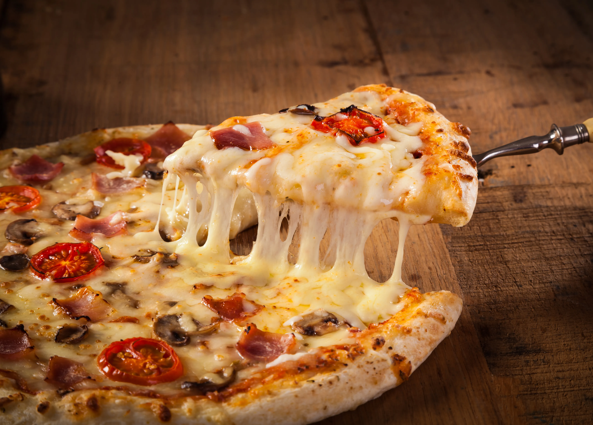

Pizza

La pizza italiana es una creación culinaria icónica conocida por su base de masa delgada y crujiente, cubierta con una variedad de ingredientes deliciosos. Su origen se remonta a la ciudad de Nápoles, donde la combinación perfecta de tomate, mozzarella fresca y albahaca creó la famosa "Pizza Margherita". La pizza es versátil y se adapta a una amplia gama de gustos, desde la simple Margherita hasta las extravagantes pizzas con ingredientes como pepperoni, champiñones y aceitunas. Descubre la auténtica pizza italiana y su increíble sabor que ha conquistado corazones en todo el mundo.
Leer más